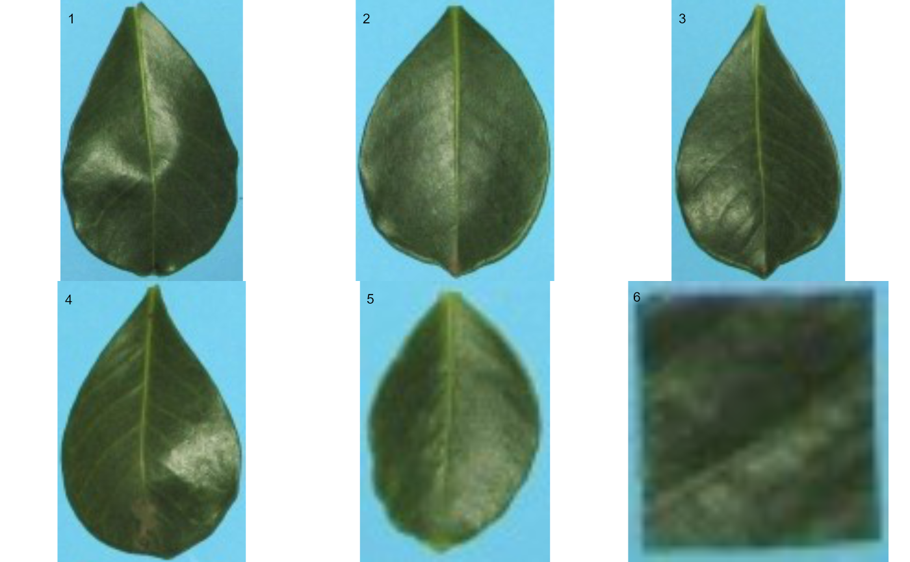
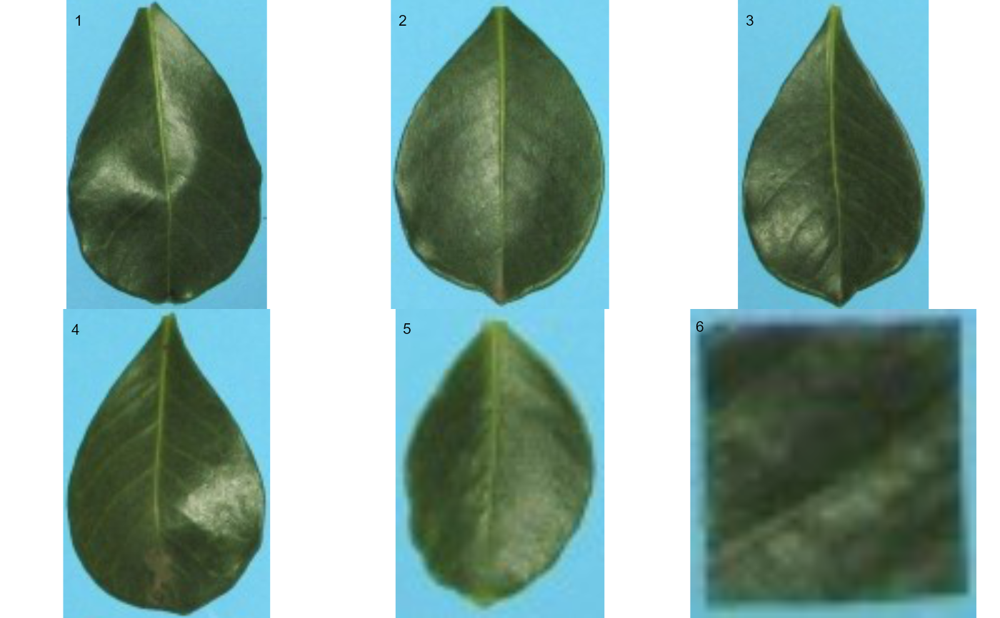

Using threshold-based segmentation, objects are first isolated from background. Then, a new image is created for each single object. A list of images is returned.
Usage
object_split(
img,
index = "NB",
lower_size = NULL,
watershed = TRUE,
invert = FALSE,
fill_hull = FALSE,
opening = 3,
closing = FALSE,
filter = FALSE,
erode = FALSE,
dilate = FALSE,
threshold = "Otsu",
extension = NULL,
tolerance = NULL,
object_size = "medium",
edge = 3,
remove_bg = FALSE,
plot = TRUE,
verbose = TRUE,
...
)Arguments
- img
The image to be analyzed.
- index
A character value specifying the target mode for conversion to binary image when
foregroundandbackgroundare not declared. Defaults to"NB"(normalized blue). Seeimage_index()for more details. User can also calculate your own index using the bands names, e.g.index = "R+B/G"- lower_size
Plant images often contain dirt and dust. To prevent dust from affecting the image analysis, objects with lesser than 10% of the mean of all objects are removed. Set
lower_limit = 0to keep all the objects.- watershed
If
TRUE(default) performs watershed-based object detection. This will detect objects even when they are touching one other. IfFALSE, all pixels for each connected set of foreground pixels are set to a unique object. This is faster but is not able to segment touching objects.- invert
Inverts the binary image if desired. This is useful to process images with a black background. Defaults to
FALSE. Ifreference = TRUEis use,invertcan be declared as a logical vector of length 2 (eg.,invert = c(FALSE, TRUE). In this case, the segmentation of objects and reference from the foreground usingback_fore_indexis performed using the default (not inverted), and the segmentation of objects from the reference is performed by inverting the selection (selecting pixels higher than the threshold).- fill_hull
Fill holes in the binary image? Defaults to
FALSE. This is useful to fill holes in objects that have portions with a color similar to the background. IMPORTANT: Objects touching each other can be combined into one single object, which may underestimate the number of objects in an image.- opening, closing, filter, erode, dilate
Morphological operations (brush size)
dilateputs the mask over every background pixel, and sets it to foreground if any of the pixels covered by the mask is from the foreground.erodeputs the mask over every foreground pixel, and sets it to background if any of the pixels covered by the mask is from the background.openingperforms an erosion followed by a dilation. This helps to remove small objects while preserving the shape and size of larger objects.closingperforms a dilatation followed by an erosion. This helps to fill small holes while preserving the shape and size of larger objects.filterperforms median filtering in the binary image. Provide a positive integer > 1 to indicate the size of the median filtering. Higher values are more efficient to remove noise in the background but can dramatically impact the perimeter of objects, mainly for irregular perimeters such as leaves with serrated edges.
- threshold
The theshold method to be used.
By default (
threshold = "Otsu"), a threshold value based on Otsu's method is used to reduce the grayscale image to a binary image. If a numeric value is informed, this value will be used as a threshold.If
threshold = "adaptive", adaptive thresholding (Shafait et al. 2008) is used, and will depend on thekandwindowsizearguments.If any non-numeric value different than
"Otsu"and"adaptive"is used, an iterative section will allow you to choose the threshold based on a raster plot showing pixel intensity of the index.
- extension
Radius of the neighborhood in pixels for the detection of neighboring objects. Higher value smooths out small objects.
- tolerance
The minimum height of the object in the units of image intensity between its highest point (seed) and the point where it contacts another object (checked for every contact pixel). If the height is smaller than the tolerance, the object will be combined with one of its neighbors, which is the highest.
- object_size
The size of the object. Used to automatically set up
toleranceandextensionparameters. One of the following."small"(e.g, wheat grains),"medium"(e.g, soybean grains),"large"(e.g, peanut grains), and"elarge"(e.g, soybean pods)`.- edge
The number of pixels to be added in the edge of the segmented object. Defaults to 5.
- remove_bg
If
TRUE, the pixels that are not part of objects are converted to white.- plot
Show image after processing?
- verbose
If
TRUE(default) a summary is shown in the console.- ...
Additional arguments passed on to
image_combine()
Examples
library(pliman)
img <- image_pliman("la_leaves.jpg", plot = TRUE)
 imgs <- object_split(img) # set to NULL to use 50% of the cores
#> ==============================
#> Summary of the procedure
#> ==============================
#> Number of objects: 6
#> Average area : 6580.833
#> Minimum area : 1014
#> Maximum area : 11042
#> Objects created : 6
#> ==============================

imgs <- object_split(img) # set to NULL to use 50% of the cores
#> ==============================
#> Summary of the procedure
#> ==============================
#> Number of objects: 6
#> Average area : 6580.833
#> Minimum area : 1014
#> Maximum area : 11042
#> Objects created : 6
#> ==============================
